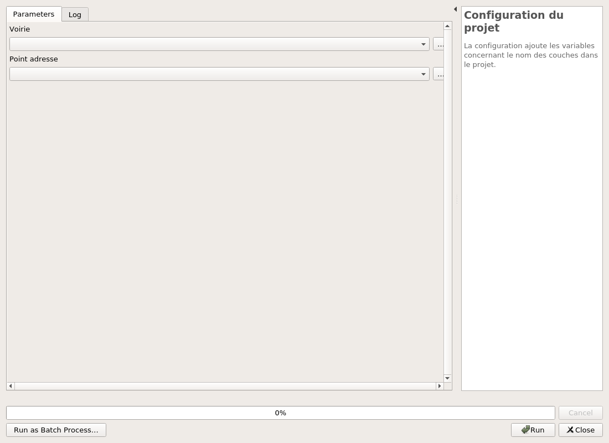
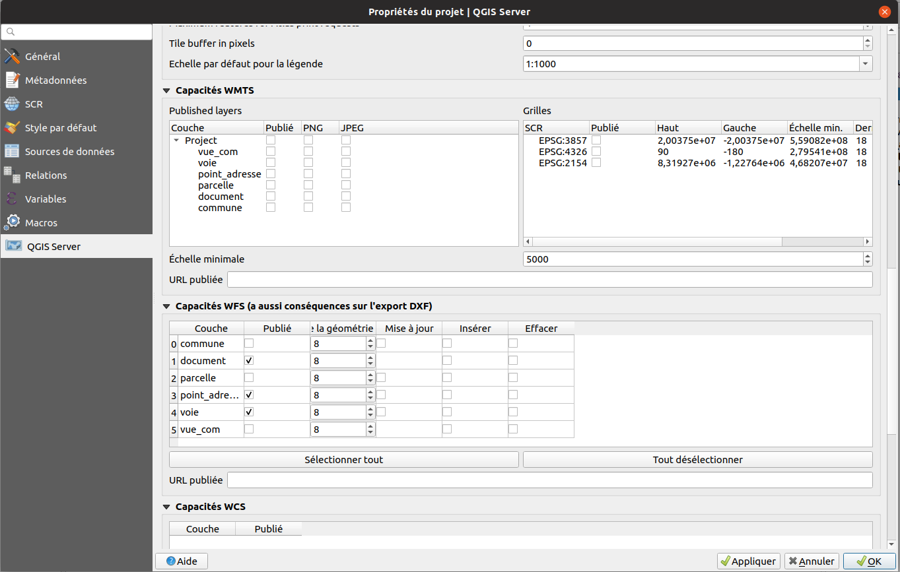

Guide d'utilisateur pour la configuration d'un projet Adresse
Il est nécessaire de suivre les étapes dans l'ordre afin de configurer le projet QGIS avec succès.
Liste des scripts
Voici les différents scripts présents dans le plugin accessible via la boîte à outils.
Structuration de la base de données
Intallation de la base
Vous allez utiliser ce script principalement lors de la première utilisation du plugin dans un nouveau projet adresse. S'il s'agit d'une nouvelle version du plugin qui impacte la base de données vous utiliserez le prochain script.
Assurez-vous d'avoir au préalable créé une connexion vers votre base de données dans QGIS. Pour cette première phase on utilise l'algorithme Installation de la structure sur la base de données présent dans l'onglet Structure de la liste des différents scripts du plugin.

Dans un premier temps vous devez sélectionner votre connexion à la base de données. Ensuite vous avez deux cases à cocher qui vous permettent: * d'écraser le schéma adresse si vous en possédez déjà un * d'ajouter des données de test fournies par le plugin
Si vous décidez d'écraser le schéma et que vous souhaitez garder vos données, veillez à faire une sauvegarde en amont.
Mise à jour de la base
Si vous disposez déjà d'une base de données adresse et qu'une nouvelle version est disponible, il faut utiliser le script Mise à jour de la structure de la base pour faire la mise à jour.

Script simple d'utilisation il suffit de renseigner la connexion à la base de données puis de cocher la case pour que la mise à jour se lance lors de l'exécution.
Configuration du Projet QGIS
Récupération des couches nécessaires
Dans l'onglet Données de la liste des différents scripts du plugin, il y a le script Chargement des couches depuis la base qui permet les différentes couches nécessaires dans le module adresse.

Pour exécuter ce script correctement il suffit de renseigner la connexion à la base de données dans le premier paramètre, puis le schéma qui contient les couches. En l'occurrence ici normalement le schéma s'appelle adresse.
Application des styles
Juste en dessous du script précédent il y a celui qui se nomme Chargement des styles depuis le dossier resources qui permet d'appliquer un style ainsi que d'appliquer les paramètres nécessaires aux couches ayant une géométrie.
Il ne contient pas de paramètres, il suffit juste de l'exécuter.

Configurer les variables de projet
On trouve maintenant le script Configuration du projet présent dans l'onglet Outils de la liste des différents scripts du plugin.
Celui-ci nous permet de configurer en variable globale dans le projet, les couches importantes qui concerne les voies et les adresses.

Ce script contient 2 paramètres, dans l'un on y met la couche voie et dans l'autre on renseigne la couche point_adresse.
Configuration des propriétés du projet
En haut à gauche de votre fenêtre QGIS vous trouverez le menu Projet dans lequel vous aurez accès aux propriétés.

Une fois dans la fenêtre Propriétés du projet vous irez dans la section QGIS Server, puis dans la
partie Capacités WFS où vous cocherez pour les couches voie, point_adresse et document la case de la colonne
Publié.
Configuration pour Lizmap
Dernière étape pour avoir un projet bien configuré il s'agit de la partie Lizmap. Il faut ouvrir le plugin. Nous, on s'occupera uniquement des sections Couches et Éditions de couche, pour le reste en ce qui concerne les Options de carte ou les Fonds vous pouvez configurer selon vos besoins et envies.
Pour ce qui est des couches, pour celles sans géométrie il n'y a rien à faire alors que celles avec géométrie
dans la partie Légende il faut cocher les cases Cochée ? et Afficher dans la légende.
Puis pour les couches point_adresse et voie on coche la case Popup.
Pour ce qui est de la configuration de l'édition comme on le voie sur l'image ci-dessous il suffit d'ajouter
les couches auxquelles on permet l'édition. Pour le module Adresse cela concerne uniquement voie, point_adresse
et document. Pour pouvoir ajouter une couche à l'édition il suffit de cliquer sur le bouton représentant une
croix de couleur verte.

Fonctionnalité des certificats de numérotation
Pour ajouter cette fonctionnalité il suffit d'utiliser l'algorithme Mise en place des données pour certificat de numérotation. Il dispose de 2 paramètres:
- La connexion à la base de données
- Le schéma de données où sont les données du cadastre

Une fois utilisé, de nouvelles couches apparaîtrons dans le projet. Il restera donc à enregistrer le projet puis ouvrir le plugin Lizmap et cliquer sur le bouton appliquer pour comptabiliser les couches dans la config Lizmap.
Voilà maintenant il ne vous reste qu'à configurer votre un projet dans Lizmap web client. Vous pouvez vous aider de la Documentation de Lizmap.
Vous pouvez ensuite lire la documentation du Module Adresse.